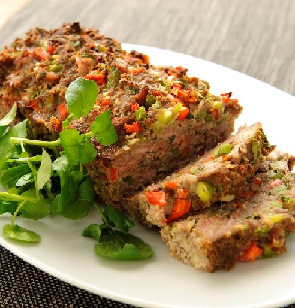

Gehaktbrood
Dit gehaktbrood kan prima bij een avondmaaltij, maar is ook een makkelijk gerecht voor een buffet.
Ingrediënten
- 1 rode paprika
- 1 groene paprika
- 1 ui
- 2 tenen knofloop
- 50 gram bacon
- ½ bosje peterselie
- 400 gram mager rundergehakt
- 50 gram paneermeel
- 1 ei
- 1 blikje tomatenpuree
- 1 theelepel tabasco
- peper
Bereidingswijze
- Warm de oven voor op 175 graden Celcius.
- Maak de paprika's schoon en snijd ze in kleine stukjes. Maak de ui schoon en snijd deze fijn. Maak de knoflook schoon. Snijd de bacon in dunne reepjes. Hak de peterselie fijn.
- Doe het gehakt, paprika, ui, bacon, peterselie, paneelmeel, ei, tomatenpuree, tabasco en peper in een kom. Pers de tenen knoflook erboven uit en kneed goed totdat alle ingrediënten zijn gemengd.
- Druk het megnsel in een cakevorm en bak deze ongeveer 1uur in de oven.
- Haal de vorm uit de oven. Laat even afkoelen en haal daarna uit de vorm. Serveer het gehaktboord op een schotel.

Tip Lekker met meergranenstokbrood. Voor een minder zout gehaktbrood kun je bacon weglaten.